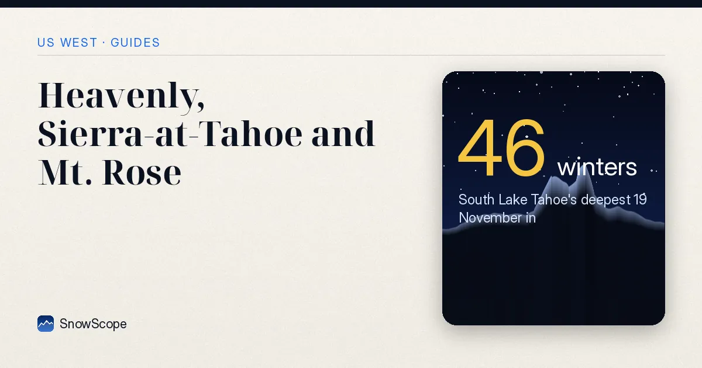
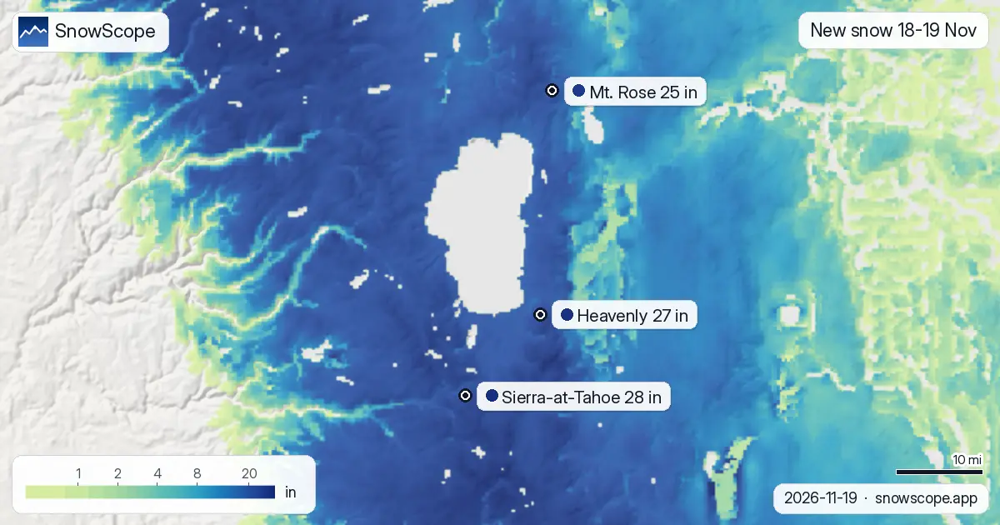

South Lake Tahoe's deepest 19 November in 46 winters: Heavenly, Sierra-at-Tahoe and Mt. Rose
Around South Lake Tahoe and up on the Mt. Rose highway, this is the deepest snow for 19 November in 46 winters. At mid-mountain, Heavenly has about 43 inches (109 cm), Sierra-at-Tahoe about 40 inches (101 cm) and Mt. Rose about 43 inches (108 cm). In a usual year all three have only 3 to 4 inches on this date. The previous best, 1994-95, is now beaten at all three.
See the live snow forecast for Heavenly in the SnowScope appSnow depth, powder alerts and the 3D map, free.
How much fell in two days
On our snow maps, Wednesday and Thursday, 18 and 19 November, bring about 28 inches (70 cm) to the upper slopes of Sierra-at-Tahoe, 27 inches (69 cm) to Heavenly and 25 inches (64 cm) to Mt. Rose. That is more than 2 feet in two days at all three. Snow on the ground at the upper slopes is now about 4 feet at Sierra-at-Tahoe, 3.8 feet at Heavenly and 4.2 feet at Mt. Rose.
The measured gauges agree. The federal SNOTEL gauge at the Mt. Rose ski area, 8,810 ft, went from 20 inches of snow on Tuesday morning to 43 inches on Thursday morning, and its snow now holds 376 % of the usual water for the date. At Carson Pass, 8,360 ft, on Highway 88 near Kirkwood, snow depth went from 18 to 30 inches and the water in it is 600 % of the usual for mid-November.
The National Weather Service Winter Storm Warning for the Greater Lake Tahoe area runs until 4 AM Friday, with an additional 15 to 30 inches above 7,000 ft and 8 to 14 inches around lake level.

Why so much snow, and why so early
Forecasters describe a landfalling atmospheric river: a narrow river of water vapour from the Pacific, steered into the central Sierra by strong southwest winds high above the ground, around a large low-pressure system offshore. As the moist air climbs the Sierra, it cools and wrings out its water as snow, at rates the Reno office expects of 2 to 3 inches per hour, locally up to 4 inches per hour in heavier bands. Along the crest the storm adds another 1.5 to 2.5 inches of water.
Two details matter for skiers. First, the snow level stays below 6,000 ft through the storm, so Heavenly's base at 6,640 ft and the lake shore get snow, not rain. Second, the Reno office expects a snow-to-liquid ratio of about 11 to 13 to 1: 1 inch of water makes 11 to 13 inches of snow. That is drier than typical Sierra snow, a good sign for powder on top of the denser snow that fell first. On Thursday afternoon, cold air flowing over the still-warm lake can even build lake-enhanced snow bands east and southeast of Lake Tahoe.
Far from the usual November
In the past 46 winters, between 12 and 15 of them had no snow at all at these mid-mountain heights on 19 November. The usual depth is about 4 inches at Heavenly and Sierra-at-Tahoe and 3 inches at Mt. Rose, so this year is about 12 times normal at Heavenly, 9 times at Sierra-at-Tahoe and 14 times at Mt. Rose. Even the snowiest 1 winter in 10 has only 17 to 26 inches on this date here.
The best past start, 1994-95, had about 29 inches at Heavenly, 31 inches at Sierra-at-Tahoe and 39 inches at Mt. Rose; 1982-83 comes next. The last three Novembers were thin: on this date Heavenly had about 3 inches in 2023-24 and 6 inches in both 2024-25 and 2025-26.
Best days, roads and avalanche danger
Friday morning brings a last round of showers, then the Reno office expects a brief dry and very cold spell from Friday afternoon to Saturday morning before a weaker storm arrives on Saturday afternoon. Our maps give about 4 more inches at Heavenly and Mt. Rose and 6 inches at Sierra-at-Tahoe from Friday to Sunday. Saturday morning is the pick: fresh snow, little wind, and roads that have had a night to be cleared.
On Thursday travel is very difficult to impossible: expect chain controls on US-50 over Echo Summit, on the Mt. Rose highway and on the roads around the lake, ridgetop gusts as high as 100 mph and waves of 2 to 4 feet on the lake. The Sierra Avalanche Center has a Backcountry Avalanche Warning with HIGH danger from Yuba Pass to Ebbetts Pass until 4 AM Friday. It does not apply inside ski area boundaries, but anyone heading out of bounds should wait.
Plan the weekend after the storm
Our trip planner compares the big western resorts on snow, ski pass, places to stay and food for your dates and budget. We set it to Saturday 21 to Monday 23 November, two nights; the Lake Tahoe pick in the planner is Palisades Tahoe on the north shore, and you can change the dates or the budget in one tap.
More maps (external sites)
References and credits
- National Weather Service: active winter storm warnings and advisories www.weather.gov/
- USDA NRCS SNOTEL: measured snow depth and snow water www.nrcs.usda.gov/resources/data-and-reports/snow-and-climate-monitoring-predictive-maps
- Avalanche.org: US avalanche forecasts avalanche.org/
About these numbers
New snow and snow on the ground at the resorts: SnowScope snow maps for 18-19 November 2026, upper slopes unless a height is given; Friday to Sunday are forecast. Past winters: the same date in each of the 46 winters since 1980-81, at the height given. Measured gauges: USDA NRCS SNOTEL, morning readings. Warnings and forecast discussions: National Weather Service, 19 November 2026.
Cite this report
For research, teaching or the press: the numbers and charts are free to reuse under CC BY 4.0 with this citation.
SnowScope (2026), South Lake Tahoe's deepest 19 November in 46 winters: Heavenly, Sierra-at-Tahoe and Mt. Rose, https://snowscope.app/blog/en/2026/11/south-lake-tahoe-record-snow-heavenly-sierra-at-tahoe-mt-rose-19-november-2026.html, accessed 2026-11-19
SnowScope (Atlas Labs). (2026, November 19). South Lake Tahoe's deepest 19 November in 46 winters: Heavenly, Sierra-at-Tahoe and Mt. Rose. SnowScope snow reports. https://snowscope.app/blog/en/2026/11/south-lake-tahoe-record-snow-heavenly-sierra-at-tahoe-mt-rose-19-november-2026.html
BibTeX
@misc{snowscope2026southlaketahoerecordsnow,
author = {{SnowScope (Atlas Labs)}},
title = {South Lake Tahoe's deepest 19 November in 46 winters: Heavenly, Sierra-at-Tahoe and Mt. Rose},
year = {2026},
month = nov,
howpublished = {\url{https://snowscope.app/blog/en/2026/11/south-lake-tahoe-record-snow-heavenly-sierra-at-tahoe-mt-rose-19-november-2026.html}},
note = {Published 2026-11-19 16:19 UTC; accessed 2026-11-19}
}· CC BY 4.0 · Methods, data and tools →
Follow Heavenly
Free: a message when fresh snow is coming, and the forecast every morning.
More snow reports

Sunlight near Glenwood Springs faces an early-season gamble in December. By mid-month you can expect 26 in (67 cm) at mid-mountain, though only 72% of winters reach that depth.

Bridger Bowl charges $86 online for 2026/27. Mid-mountain has 20 in (50 cm) on 15 December in half of winters; Christmas week odds improve to 78 %.

Fresh snow across the US West has built depths well above normal. At Palisades Tahoe Alpine Meadows, upper slopes hold 75 cm (measured 2026-11-18), compared to 10 cm typical for mid-November.